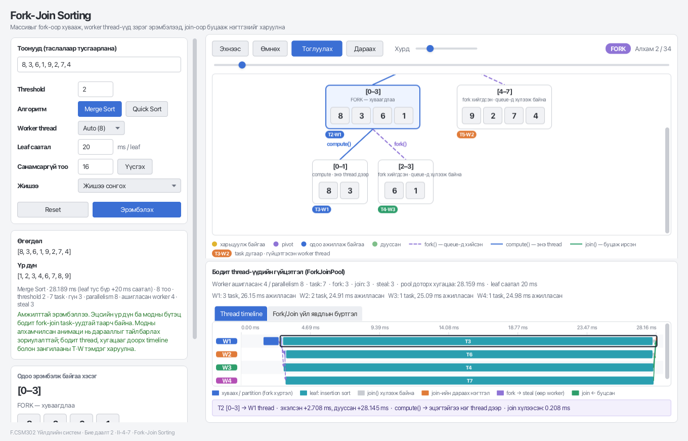
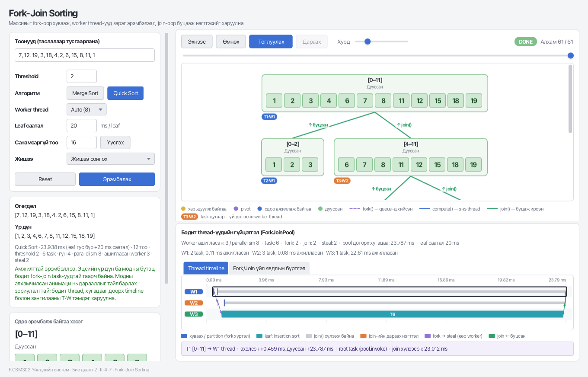

Fork-Join Sorting • Final
Merge Sort ба Quick Sort-ийг ForkJoinPool дээр зэрэгцээ эрэмбэлж, fork, join ба worker thread-ийг харуулна · Java 23 · JavaFX 23 · JUnit 5
II-4-7 · F.CSM302 Үйлдлийн систем · БД2
Асуудал
Fork-Join загварт эцэг task ажлаа хоёр хувааж
fork , дэд task-ууд worker thread-үүд дээр зэрэг ажиллаж,
эцэг нь join -оор хүлээж нэгтгэнэ. БД1 алгоритмыг сайн тайлбарлаж байсан ч
аль thread, хэзээ, юу хийж байгааг харуулдаггүй байв.
Шийдэл
Task бүр fork / join цэг, worker, хугацаагаа бүртгэнэ:
T1 [0–7]
→
fork() T5 [4–7]
→
compute() T2
→
join() T5
→
merge
Recursion tree: FORK/JOIN алхам, fork()/compute()/join() ирмэг, зангилаа бүрт T3·W2 (task·worker).Thread timeline: worker бүр нэг мөр, хулгайлсан (steal) fork ба join сум, бүх үйл явдлын бүртгэл.
Шүүмжийн дагуух сайжруулалт
Багш: fork/join ба thread-ийг бодит хугацаагаар харуулдаг болсон.A1 (Major): эрэмбэлэлт UI thread-ээс background thread руу шилжсэн.A2, A4: task/thread бүртгэл; mvn test + CI, хоосон массив, threshold 0 тест.Өөрсдөө: task бүр массивыг текст болгодог алдааг засаж 2.3–3.7× хурдан болсон.
Дүгнэлт
Хурдсалт worker-ийн тоогоор өсөх ч Amdahl-ийн хуулиар шугаман биш. Join дээр хүлээж буй thread сул зогсохгүй,
өөр task хулгайлна. Хязгаарлалт: мод ≤ 32 элемент; анимаци нь тайлбар, бодит дараалал нь timeline.

Зураг 1. FORK алхам. [0–3] нь [0–1]-г өөрөө compute() , [2–3]-г fork() хийв.
Доор: 4 leaf (T3, T4, T6, T7) 4 өөр worker дээр зэрэг ажиллаж байна (8 тоо, threshold 2, саатал 20 ms).

Зураг 2. Work stealing. W1-ийн fork хийсэн T3-г W2, W2-ийн fork хийсэн T6-г W3 хулгайлж
ажиллуулав. W1, W2 join() дээр хүлээж байна (саарал).
Туршилт ба үр дүн
Өөрчилж: worker-ийн тоо, threshold, алгоритм, өгөгдөл. Ажиглах: хугацаа, steal, timeline.
11 946
тест амжилттай, 0 алдаа (BD1: 9 111) 4.35×
8 worker, Merge Sort, 10⁶ элемент 98→28 ms
1 worker → Auto (8 тоо, 20 ms leaf)
Хурдсалт T(1)/T(p)
0 2
4 6 8
1 2
4 8
worker thread
Merge 4.35× Quick 3.77×
шугаман
10⁶ элемент, 8 worker BD1 BD2 Merge Sort, th 1000 604.7 ms 241.6 ms Quick Sort, th 1000 695.9 ms 187.5 ms
Apple M1 (4P+4E), Java 23.0.1, median of 5 (3 warm-up). Хамгийн сайн threshold ≈ 64.
GitHub · final release v2.0.0
github.com/NamiIwbr/fork-join-sorting
Туршиж үзэх: README → Quick Startmvn clean javafx:run · mvn clean test